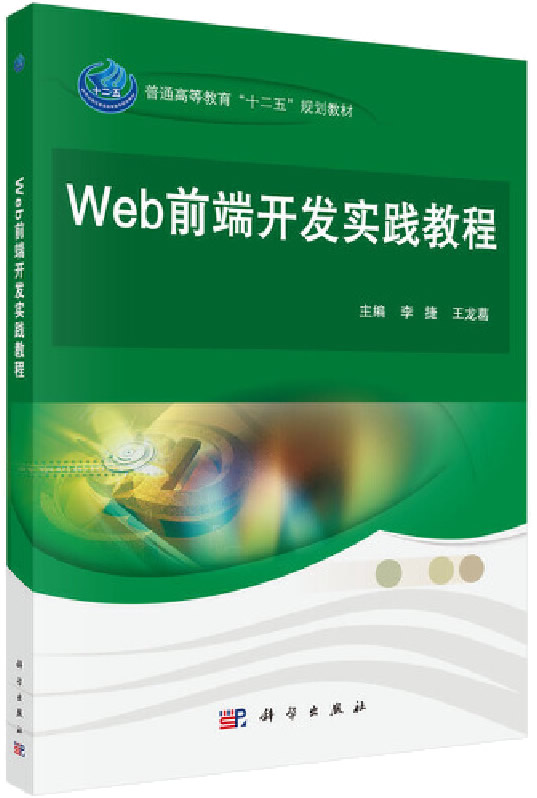

首页 > 书籍下载
《Web前端开发实践教程》PDF下载（高清完整版）
|  | 作者：李捷、王龙葛 |
| 出版时间：2017年03月01日 | |
| 出版社： 科学出版社 | |
| ISBN：9787030521262 | |
| 总页数：253 | |
| 总字数：42.2W |
这是一本 Web 前端开发实践教程，对新的开发技术进行了全面的介绍，提供了丰富的实例，让读者在实践中掌握新的主流开发技术。
这里提供的是《Web前端开发实践教程》的高清 PDF 下载，内容完整，附带目录标签。
《Web前端开发实践教程》共包含7章内容，除了讲解 HTML5、CSS3、JavaScript 三大核心技术以外，还讲解了 DOM 和 BOM 对象及其事件处理机制，且涉及了响应式开发等新颖内容，作为一名 Web 前端开发工作者，这本书给了我很大的帮助，让我在近期的项目开发中大大地提高了工作效率。
所以，不论你是刚刚接触 Web 网页开发的初学者，还是有一些项目开发经验的从业者，只要你想到技术方面有所提升，就拿起这本书来学习吧，相信你读完以后肯定会收获满满！
书籍目录
- 第1章 HTML概述
- 1.1 网页制作概述
- 1.2 HTML4常用元素与属性
- 1.3 HTML的表单元素
- 1.4 HTML5的多媒体元素
- 1.5 项目实践：个人注册页面的实现
- 本章小结
- 第2章 CSS样式表
- 2.1 CSS基础
- 2.2 CSS选择器
- 2.3 边框
- 2.4 背景
- 2.5 文本
- 2.6 盒模型
- 2.7 浮动与定位
- 2.8 列表
- 本章小结
- 第3章 CSS样式高级篇
- 3.1 CSS页面布局
- 3.2 CSS3渐变
- 3.3 CSS3变形
- 3.4 项目实践
- 本章小结
- 第4章 JavaScript入门
- 4.1 JavaScript介绍
- 4.2 JavaScript入门基础
- 4.3 程序流程控制语句
- 4.4 函数
- 4.5 JavaScript内置对象与事件
- 本章小结
- 第5章 DOM对象与BOM对象
- 5.1 DOM对象
- 5.2 BOM对象
- 5.3 尺寸获取
- 5.4 项目实践
- 本章小结
- 第6章 jQuery基本应用
- 6.1 jQuery概述
- 6.2 jQuery选择器
- 6.3 jQuery HTML操作
- 6.4 jQuery事件
- 6.5 jQuery动画方法
- 6.6 项目实践
- 本章小结
- 第7章 综合案例
- 7.1 整体布局
- 7.2 Bootstrap响应式框架
- 7.3 导航区域
- 7.4 轮播区域
- 7.5 主体区域
- 7.6 页脚区域
- 本章小结
书籍下载
一键登录，免费下载完整版 PDF，文件名称：《Web前端开发实践教程》.pdf